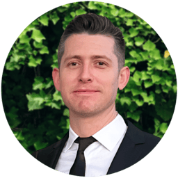
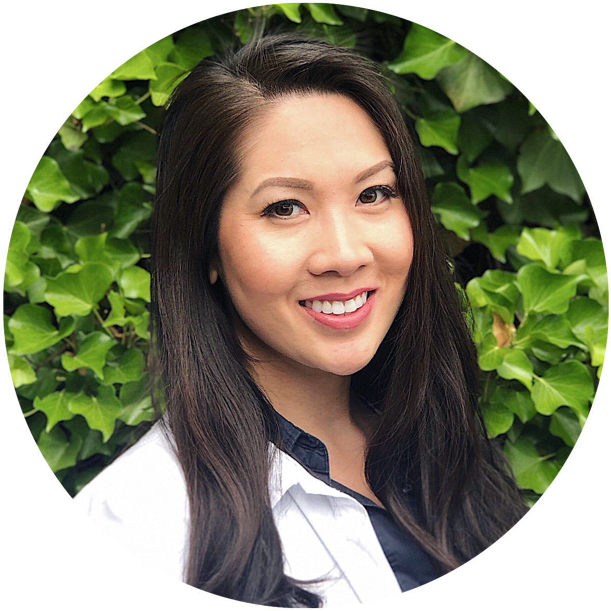
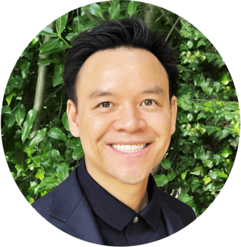
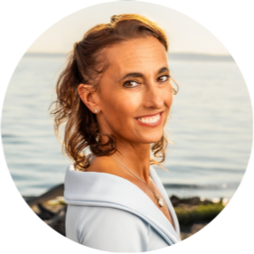
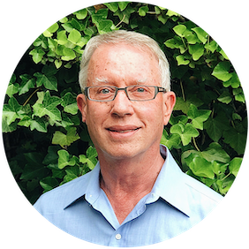

Meet Our Holistic Doctors
Biological Experts Dedicated to True WellnessClick on a provider to learn about their training, holistic philosophies, and clinical passions.

Dr. Bramely Birrer, DDS
Biological Dentist
Dr. Christine Cao, DMD
Holistic Clinician
Dr. David Do, DDS
Implant Specialist

Dr. Jeannette Daneals, ND, LMT
IV Sepcialist
Dr. Paul Rubin, DDS
Pioneer of Holistic DentistryDr. Bramley Birrer, DDS
Dr. Birrer was born and raised in Southern California. He
took after his father, a jack-of-all-trades, fixing things around the house and working
on cars and other crafts. In doing so, he discovered the joys of hard work with his
hands, which initially led him to dentistry. When not restoring smiles, Dr. Birrer
enjoys watching independent films and exploring local cuisine.
Dr. Birrer is SMART (Safe Mercury Amalgam Removal Technique) Certified with IAOMT
(International Academy of Oral Medicine & Toxicology). He also specializes in same-day
all-ceramic fillings and crowns using CEREC CAD/CAM technology. These restorations are
strong, long-lasting, natural-looking without metal, without BPA, without temporaries
that break or fall off, and without a 2nd appointment. You will leave my office that day
with teeth that are ready to use!
As my patient, you are not just another set of teeth; you are another conversation, another story, another friendship. By knowing who you are, I can know what your teeth mean to you, and this is where dentistry begins.
- University of California, Los Angeles (UCLA), School of Dentistry Alumn
- Specializes in Root Canal Alternative Strategies
Dr. Christine Cao, DMD
Although born and raised in Southern California, Dr. Cao
earned her doctorate degree from Tufts University School of Dental Medicine in Boston,
MA. She returned to Southern California where she completed Invisalign certification and
a General Practice Residency at Harbor-UCLA Medical Center where her training included
implant restorations and cosmetics. She holds memberships to various dental associations
and study clubs. She also enjoys volunteering her time at free clinic days and mission
trips to other countries. Dr. Cao believes that every patient should be treated to her
fullest potential taking into consideration all their desires, capabilities, and
sensitivities to devise the most appropriate and individualized treatment plan.
- Tufts University School of Dental Medicine Alumn
- Expert in Women's Health in Dentistry
Dr. David Do, DDS
Dr. Do is originally from Northern California where he
graduated in 2012 from the University of the Pacific, fulfilling his lifelong dream of
becoming a dentist. He went on to complete implant training at the Pacific Institute in
Vancouver, BC., and is versed in Botox through the American Academy of Facial
Aesthetics. He and a Bernedoodle named ‘Remy’ happily call Seattle home, enjoying
outdoor activities like hiking, skiing, and beaching, and appreciating the simple
pleasure of staying in and watching the rain fall.
Through ceaseless study of today’s latest methods and technology, Dr. Do is able to
provide the absolute best dentistry has to offer. By collaborating with like-minded
professionals and specialists, he utilizes a unique multidisciplinary approach to oral
healthcare.
Described by colleagues as humble and calm, and “the kindest doctor,” Dr. Do is known
for his spirit of compassion, always honoring his patient’s needs and putting their
wishes first.
Dr. Do is excited about practicing whole-body dentistry because he believes the right
kind of care has the power to enhance both the physical and emotional aspects of health
and well-being.
- University of the Pacific, and Pacific Institute Alumn
- Implantologist and Facial Aesthetics Provider
Dr. Jeannette Daneals, ND, LMT
Dr. Jeannette Daneals, graduated from National College of
Natural Medicine (NCNM)in 2016. She then completed a two-year residency at Cameron
Wellness Center in Salt Lake City, Utah where she became proficient at intravenous
therapy, and managing bioidentical hormones, earning an advanced BHRT certification
through worldlink medical.
Dr. Daneals also launched a SIBO testing center directly on site for the clinic, where
she began working with patients contending with gastrointestinal imbalances, which later
brought her to learning the fine art of administering colon hydrotherapy via the closed
colonic system.
Her strong affinity for physical medicine is exemplified further as a deep tissue
massage therapist and fitness trainer. She is also highly skillful at administering
complex intravenous therapies such as Extracorporeal Blood Oxygenation-Ozonation (EBOO)
and Photodynamic Therapy using Weberneedle Endolaser technology. She has earned the
nickname, the “Vein Whisperer”. Dr. Daneals believes that competence proceeds confidence
and confident she is, in her IV administration skills.
With a newfound passion for understanding quantum physics as it relates to light, water
and magnetism on mitochondrial health, Dr. Daneals manages wellness using the laws of
nature as her guide. Her dharma as teacher and coach are actualized through reminding
others of the intelligence of the human body and its ability to heal itself. She
believes that health is achieved when living within the laws of nature and living a life
of purpose.
Dr. Daneals finds soulful fulfillment hosting her mindfulmedicina podcast, studying hand
analysis, bodybuilding and dancing salsa, bachata and kizomba. Otherwise, you'll find
her binging on near-death experience podcasts, sunbathing and cold plunging. Her loyalty
and sense of service extends to family and friends, which includes a sacred contract to
her toddler soulmate and feline daughter.
- National College of Natural Medicine (NCNM) Alumn
- IV Therapy, Antibiotic Alternatives, EBOO, and UVBI Treatments
Dr. Paul Rubin, DDS
Dr. Rubin is one of this area’s pioneers in mercury safe
dentistry, abandoning the use of mercury amalgam (“silver”) dental fillings in 1980. One
of the early members of the International Academy of Oral Medicine and Toxicology
(IAOMT), he has served in various offices and on its Board of Directors for several
years, helping to see it grow into one of the world’s leading authoritative bodies in
the area of mercury and other toxins in dentistry. Dr. Rubin was honored as a Fellow of
the IAOMT in 1992, and a Master of the IAOMT in 2007. Dr. Rubin is also a charter member
of the International Association of Mercury Free Dentists. In 2009, Dr. Rubin co-founded
New Directions Dentistry, a company dedicated to teaching dentists nationwide how to
practice mercury safe dentistry.
With a special interest in the environmental effects of dental amalgam mercury, Dr.
Rubin has lectured across the country and published research on this subject. His was
the first office in Washington State (and one of the first in the country) to install a
mercury capturing system to prevent waste amalgam-mercury from leaving the dental office
waste stream, over a fifteen ago. As of July of 2003, all King County dental offices are
now required to have such equipment. In 1997, Dr. Rubin was honored as Runner-Up for the
Governor’s Award for Pollution Prevention, and won the Puget Sound Waste Information
Network’s Award for Environmental Achievement. He was the first, and one of the few
dental offices to receive Envirostars’ highest 5-star rating. Dr. Rubin has appeared and
testified before informational hearings by King County Board of Health and the
Washington State Senate Committee on Health and Long Term Care.
After 46 years of service and advocacy in biological dentistry, Dr. Rubin hangs up his handpiece and loupes to focus on dental education, magic, lucid dreaming, and being a grandfather. We’re proud to announce Dr. Rubin’s retirement and will closely follow his ongoing efforts in educating the next generation of naturopathic doctors!
- IAOMT Fellow since 1992, Master of the IAOMT since 2007
- Pioneer in Mercury Safe and Free Dentistry